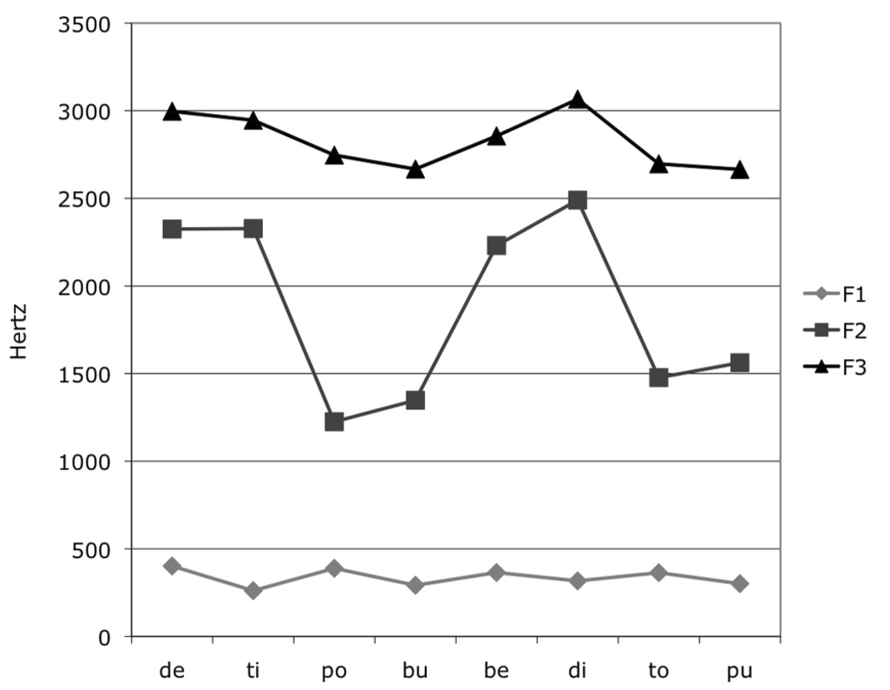
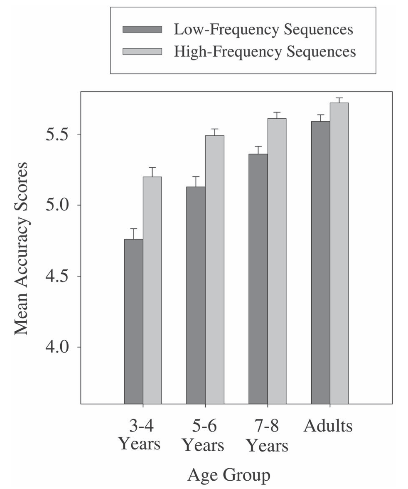
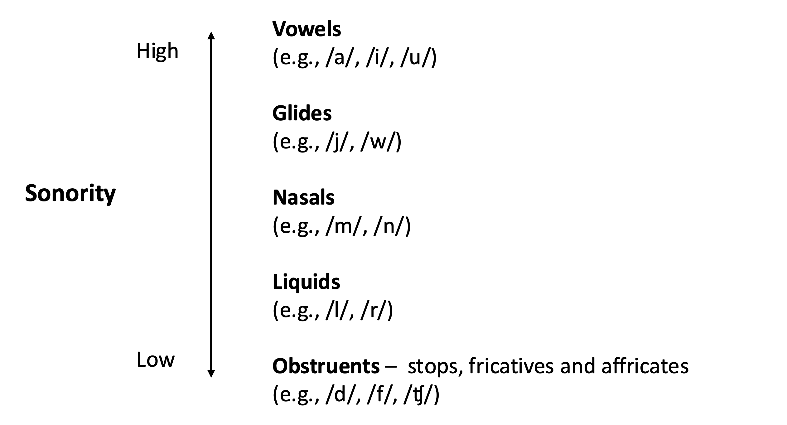

Chapter 6 Phonotactics
6.1 Chapter overview
As discussed in Chapter 3, the first few years of life see children identifying and learning the contrastive sounds units of the language, or phonemes. However, learning how the phonology of a language is organized involves more than simply acquiring an inventory of contrastive sound categories. Children must also learn the constraints on how those sound categories can be combined within syllables and words. These constraints, which differ between languages, are known as phonotactics. In English, for example, the consonant /ŋ/ can occur in the coda of a syllable, as in sing /sɪŋ/, but never in the onset. In contrast, Thai allows /ŋ/ in onset position, as in /ŋãːn/ ‘work’. Similarly, English allows the sequence /tr/ in onset position (as in track), but not /tl/. Czech, however, /tl/ is a perfectly acceptable onset, as in /tlak/ ‘pressure’.
Phonotactic patterns are not merely descriptive facts about languages. They form part of speakers’ implicit linguistic knowledge. Adult speakers of English can easily judge that /vɪŋ/ (ving) could be a possible English word, whereas /ŋɪv/ (ngiv) could not. Likewise, /trɛp/ (trep) is judged to be possible, but /tlɛp/ (tlep) is not. Speakers’ phonotactic knowledge extends beyond absolute restrictions to probabilistic patterns, and includes knowledge about which sound combinations occur more frequently than others, even when both are possible. In American English, both -/ɚk/ (as in work, lurk) and -/ɚp/ (as in burp, slurp) are permissible rime sequences, but -/ɚk/ is far more common. When adults are presented with novel words such as nerk (/nɚk/) and nerp (/nɚp/) and asked which “sounds more like a real English word,” they give higher ratings to words ending in the more frequent -/ɚk/, reflecting their sensitivity to frequency-based phonotactic patterns (Treiman et al., 2000). Phonotactic probability also affects how quickly adults can name pictures of words (Vitevitch et al., 2004) and decide whether a word is real or made-up (Vitevitch & Luce, 1999). In other words, both categorical and probabilistic phonotactic patterns are part of a speaker’s phonological knowledge.
The goal of this chapter is to explore when and how infants and children acquire this knowledge from the language they hear. As in earlier chapters, we will first examine evidence from perception and recognition, and then turn to evidence from production.
6.2 Phonotactics in perception and recognition
6.2.1 Sensitivity to native phonotactics: Local dependency
When do infants start showing perceptual sensitivity to constraints on the way the phonemes of their native language can be combined? The groundwork for this line of research was laid by two landmark studies by Jusczyk and his collaborators. In the first study, Jusczyk et al. (1993) examined how 9-month-olds learning English or Dutch responded to lists of English and Dutch words. Although these were real words, they were extremely infrequent items, such as aglow, cubeb and butane, that could be safely assumed to be unknown to infants. Most of the selected words violated the phonotactic restrictions of the other language. For instance, the English list had words begining with /ə/ (aglow, astound) or ending in voiced stops (cubeb, stewed), patterns not permitted in Dutch. Conversely, the Dutch list had words beginning with /kn/ (kneizen, knoest) or containing sequences such as /lmp/ (kalmpjes) and /mst/ (bekomst), none of which is attested in English. When these were played to infants in a Headturn Preference Procedure, English-learning 9-month-olds listened longer to the English list, whereas Dutch-learning 9-month-olds listened longer to the Dutch list. These results were not obtained when 6-month-olds were tested, suggesting that infants start distinguishing between legal and illegal sequences of phonemes in their native language words between 6 and 9 months of age.
In the second study, Jusczyk et al. (1994) investigated whether English-learning 9-month-olds are also sensitive to phonotactic probabilities within the native language; that is, whether they can differentiate sound patterns that are common in English from those that are possible but less common. They created two lists of nonwords, one with high-probability phonotactic patterns and one with low-probabiblity phonotactic patterns (See Box 6.1 on how the statistical properties of these words are calculated). The two types of nonwords are given in Table 6.1. In the first high-probability nonword /ɹɪs/, the consonant /ɹ/ (as in row), the vowel /ɪ/ (as in bid) and the consonant /s/ (as in say) are relatively frequent in English in the initial, medial and final position, respectively. Furthermore, the probability for /ɹ/ to be followed by /ɪ/ (as in rib) and that for /ɪ/ to be followed by /s/ (as in kiss) are relatively high. In comparison, each of the segments in /jaʊʤ/ has a low probability in their respective position, and the cooccurrence of /j/ and /aʊ/ (as in yowl) and that of /aʊ/ and /ʤ/ (as in gouge) are relatively low.
High probability | Low probability |
|---|---|
[rɪs] | [jaʊʤ] |
[gɛn] | [ʃɔʧ] |
[kæz] | [guʃ] |
The 9-month-old infants in the study showed longer listening times for the high-probability words than the low-probabibility words, but the 6-month-olds did not. These results indicate that some time between 6 and 9 months, English-learning infants begin to learn not only which phonotactic patterns are possible or impossible in the native language but also which ones are more frequent than others.
- Box 5.1: How phonotactic probabilities are measured
- Different types of measures can used to quantify how frequently phonemes occur in different positions. The two most commonly used metrics are positional segment frequency (i.e., how often a particular segment occur in a given position in a word) and biphone frequency (i.e., how often a particular sequence of two phonemes occurs in a given position in a word). These metrics are calculated using a corpus of real language use (e.g., mothers’ naturalistic speech addressed their children). If we wanted to know the biphone frequency of word-initial /st/ in English, for example, we can count the number of different words in a corpus that start with /st/ (e.g., star, stop, and strong), and divide this number by the number of all different words. This statistic is called type frequency or type count. We can also count how often words starting with /st/ occur in the corpus, adding up the number of times each /st/-initial word is used (e.g., 134 cases of star plus 394 cases of stop plus 2,405 cases of strong, and so on), and then divide this number by the total occurrences of all the words. This statistic is called token frequency or token count. The overall phonotactic probability of a word is often estimated using the sum of the component biphones of the word. For instance, the overall phonotactic probability of a nonword /sʌv/ can be estimated by adding the biphone probability of /sʌ/ as the first and second phonemes of a word and that of /ʌv/ as the second and third phonemes of a word. There are currently several online tools that allow users to calculate these metrics, including the KU phonotactic probability calculator (Vitevitch & Luce, 2004), the UCI phonotactic calculator (Mayer et al., 2025), and the Irvine Phonotactic Online Dictionary (IPhOD) (Vaden et al., 2009).
Similar results have been reported for other languages. Dutch-learning 9-month-olds, but not 4- or 6-month-olds, exhibit preference for listening to nonwords with legal onset consonant clusters (e.g., /gr/-, /sg/-) than illegal ones (e.g., /ks/-, /gt/-), and to nonwords with legal coda clusters (e.g., -/ks/, -/gt/) than illegal ones (e.g., -/gr/, -/sg) (Friederici & Wessels, 1993). Catalan-learning 10-month-olds listen longer to nonwords with legal coda consonant clusters (e.g., -/rt/, -/sk/, -/rn/) than those with illegal ones (e.g.,-/tr/, -/kf/, -/sn/) (Sebastián-Gallés & Bosch, 2002). The Catalan 10-month-olds’ responses are products of their exposure to the native language, because 10-month-olds learning Spanish, a language that does not allow any of these clusters in syllable codas, show no preference between coda clusters that are legal or illegal in Catalan. These findings indicate that infants typically become attuned to the positions and combinations of the phonemes in the native language between 6 and 9 months of age.
6.2.2 Sensitivity to native phonotactics: Nonlocal dependency
Not all phonotactic patterns follow the same developmental schedule, however. In fact, the timing of the emergence of sensitivity appears to be dependent on the type of phonotactic constraints (Sundara et al., 2022). All the examples of phonotactics discussed above involve the occurrence of at most two phonemes that are next to each other. We call such a relationship between adjacent phonological units local depedency because the likelihood of a particular phoneme occurring in a given position is determined by the identity of the adjacent phoneme. Local dependency contrasts with nonlocal or long-distance dependency, where a cooccurrence pattern exists between two nonadjacent phonemes.
A canonical case of phonotactics involving nonlocal dependency is vowel harmony. In languages that have vowel harmony (e.g., Turkish, Hungarian, Finnish, and Yoruba), vowels in a word must share one or more of vowel features such as backness, roundedness, height, and advanced tongue root. To understand how this works, we can look at Turkish. Turkish has eight vowels, which are contrastive in backness (front versus back), roundedness (rounded versus unrounded) and height (high versus non-high) (see Table 6.2). With some exceptions, native words in the language must have exclusively back vowels (/ɑ, ɯ, o, y/) or exclusively front vowels (/e, i, œ, y/). The non-high unrounded vowels /e/ and /ɑ/ only have to agree with the preceding vowel in backness, so /e/ can occur after /e/, /i/, /œ/, or /y/, and /ɑ/ can occur after /ɑ/, /ɯ/, /o/, or /y/. However, the other vowels must agree with the preceding vowels in both backness and roundedness, so /i/ can occur only after /i/ or /e/, /y/ can occur only after /y/ or /œ/, /ɯ/ comes after /ɯ/ or /ɑ/, and /u/ after /u/ or /o/. The words /deniz/ (‘sea’) and /dɑmɯz/ (‘animal shed’) follow this phonotactic constraint, but hypothetical forms such as /dɑniz/ and /demɯz/ violate it. Note that the consonants that intervene the vowels do not matter, making this phonotactic constraint a “nonlocal” dependency between the vowels.
Height | Front | Back | ||
|---|---|---|---|---|
Unrounded | Rounded | Unrounded | Rounded | |
High | i | y | ɯ | u |
Non-high | e | œ | a | o |
Experiments using the Heardturn Preference Procedure show that Turkish learning infants are sensitive to this pattern as early as 6 months of age (Hohenberger et al., 2016; van Kampen et al., 2008). They listen longer to nonwords that contain vowels that are either both back or both front (e.g., /letin/) than those that have vowels mistmatched in backness (e.g., /nelok/). They did not, however, show sensitivity to roundedness harmony.
In the previous section, we saw that infants learn how adjacent consonants are combined in their language sometime between 6 and 9 months. Why then do Turkish-learning infants demonstrate sensitivity to backness vowel harmony in Turkish earlier? On the surface, this sounds counter-intuitive. Segments that are separated by other sounds seem more difficult to keep track of than segments that are right next to each other. One explanation for this discrepancy is that, as the name suggests, vowel harmony involves a similarity relationship between sounds. Feature similarities between vowels have acoustic consequences. Vowels that agree in backness (e.g., /i/-/e/, /u/-/o/) have similar second formant values, and vowels that agree in height (e.g., /i/-/u/, /e/-/o/) have similar first formant values. Because of this, harmonic vowels may be perceived as being grouped together, even when there are intervening consonants. Indeed, English-learning 4-month-olds, who have no prior exposure to a vowel harmony language, prefer to listen to nonwords with vowels that agree in backness (e.g., /bide/, /potu/) or height (e.g., /budi/, /pote/) than nonwords with vowels that disagree in backness and height (e.g., /bude/, /poti/) (Solá-Llonch & Sundara, 2025). English-learning 7-month-olds also segment, or extract, disyllabic units from a familiarization sequence when the units have vowels that agree in backness (e.g., /deti/, /pobu/) (Mintz et al., 2018). As an acoustic analysis of the familiarization used in this experiment shows (see Fig. 6.1), the grouping of vowels sharing backness, /de/-/ti/ and /po/-/bu/, is clearly signalled by the similarity and difference in the second formant. It appears then that young infants have a perceptual bias for grouping similar vowels regardless of their prior linguistic experience, and this bias may facilitate the learning of nonlocal vowel dependency in languages that have vowel harmony. The bias is overridden by exposure to languages that do not have vowel harmony, however, as by 8 months, English-learning infants no longer show preference for nonwords with harmonic vowels over nonharmonic ones (Solá-Llonch & Sundara, 2025).

Figure 6.1: Formants of the familiarization sequence used in Mintz et al. (2018)
Another finding that is consistent with this acoustic bias interpretation comes from a study that looked at 6-month-olds’ sensitivity to advanced tongue root (ATR) harmony in multilingual Ghana (Omane et al., 2024). In some languages spoken in Ghana, such as Dagbanli, Anum, and Dagaare, vowels are grouped into two categories depending on whether they are articulated with the tongue root moved forward (+ATR, e.g., /i, e, u, o/) or backward (-ATR, e.g., /ɪ, ɛ, ʊ, ɔ/). Words in these languages usually have exclusively +ATR vowels or -ATR vowels only. Other languages in Ghana, such as Ga, Ewe, and Ghanian English, do not have ATR harmony. Because Ghana is highly multiligual, Ghanian infants are exposed to different mixture of languages with or without ATR harmony. Like the Turkish 6-month-olds, the Ghanian 6-month-olds in Omane et al. (2024) preferred listening to harmonic novel words over nonharmonic ones. Crucially, the level of preference was unrelated to the amount of ATR language(s) individual infants were exposed to. This suggests that regardless of their linguistic experience, infants have a perceptual bias to group vowels on the basis of ATR differences that are reflected in acoustic profiles, mostly likely the first formant, which is a consistent cue for ATR differences.
This does not mean that any vowel harmony pattern is learned as early as that in Turkish and Ghanian ATR languages. Hungarian has vowel harmony that is similar to that of Turkish in the sense that it has backness as its main feature of agreement and roundedness as a secondary feature. Vowels in Hungarian come in pairs of short and long vowels, which belong to one of the three categories shown in Table 6.3: unrounded front vowels, rounded front vowels, and back vowels. Most Hungarian words have either only front vowels or only back vowels. This much is the same as Turkish backness harmony. However, there are quite a few Hungarian words in which a back vowel occurs with an unrounded front vowel (e.g., papír [pɒpiːr] ‘paper’). The existence of such nonharmonic stems and other complications make Hungarian vowel harmony less regular than Turkish vowel harmony. Estimates show that Turkish vowel harmony applies to about 90% of its vocabulary whereas the backness vowel harmony pattern described above applies to only 68 to 76% of Hungarian words (Gonzalez-Gomez et al., 2019).
Height | Front | Back | |
|---|---|---|---|
Unrounded | Rounded | ||
High | i iː | y yː | u uː |
Mid | ɛ eː | ø øː | o o |
Low | ɒ aː | ||
As expected, sensitivity to vowel harmony develops later in Hungarian infants than Turkish infants. At 13 months, Hungarian-learning infants show different looking times for harmonic nonwords that contain either only front vowels (e.g., /ɛdy/, /øti/) or only back vowels (e.g., /opɒ/, /ugo/) and for nonharmonic nonwords that contain a mixture of the two (e.g., /ɛdɒ/, /obi/) (Gonzalez-Gomez et al., 2019). But not at 10 months. The difference in the developmental timing between Turkish (before 6 months) and Hungarian (between 10 and 13 months) indicates that, despite the initial perceptual bias for grouping similar vowels, sensitivity to vowel harmony does not emerge early unless there is a certain level of regularity in the nonlocal dependency between vowels.
What about nonlocal dependency that does not involve acoustic similarities? When do infants learn the probability of two vowels that cooccur in a word when there is no phonetic signal that consistently groups them together? To answer these questions, we can turn to Hebrew-learning infants’ sensitivity to the vowel phonotactics of the language. In Hebrew, as in other Semitic languages, many words are made up of two components called “roots” and “templates”. A “root” typically consists of three consonants and indicates the core meaning of the word. A “template” (not to be confused with the phonological template in whole-word models of word production) is a structure like CaCaC, with C(onsonant) slots for the root and a fixed sequence of vowels and stress, and sometimes also an affix that contains more consonants. A word is formed by inserting the root into the consonant slots in the template. For instance, the root ʃ-l-t carries the core semantics ‘rule/control’ and forms /ʃalat/ ‘rule/control-3rd-person-singular-past’ with the template CaCaC, /ʃlitá/ ‘control’ (verbal noun or gerund) with CCiCá, /ʃilton/ ‘rule, government’ with CiCCon, and /ʃlat/ ‘control’ (as in ‘remote control’) with CCaC. Some templates, such as CéCeC, appear across many words, creating frequent vowel sequences interleaved with consonants: /séʃer/ ‘book’, /dérex/ ‘road’, /régel/ ‘foot’, and /béten/ ‘belly’. Others, such as CóCoC, are less common, leading to infrequent vowel sequences. Using the Headturn Preference Procedure, Segal et al. (2015) tested Hebrew-learning 8- to 11-month-olds on their preferece for nonwords with two frequent templates CéCeC (e.g., /bédet/, /kédef/) and CaCóC (e.g., /badót/, /kadóf/) in comparison to an infrequent CáCoC (e.g., /bádot/, /kádof/) or nonexistent CoCóC (e.g., /bodót/, /kodóf) template. See Table 6.4 for more examples. The infants showed longer listening times for words comprising the frequent templates than the infrequent or nonexistent ones. This indicates that by 8 to 11 months, Hebrew-learning infants are able to differentiate frequent vowel sequences combined with stress patterns from infrequent ones, regardless of the similarity of the vowels.
## Warning in read.table(file = file, header = header, sep = sep, quote = quote, :
## incomplete final line found by readTableHeader on 'data/Segal2015.csv'CéCeC | CóCoC | CaCóc | CaCéC |
|---|---|---|---|
bédet | bódot | badót | badét |
géles | gólos | galós | galés |
méteʃ | mótoʃ | matóʃ | matéʃ |
déken | dókon | dakón | dakén |
As a matter of fact, infants are also able to learn cooccurence patterns between nonadjacent vowels that are dissimilar to each other, as long as the patterns are frequent. In French, words in which a back vowel (e.g., /o/, /u/) is followed by a nonadjacent front vowel (e.g., /i/, /e/), such as hotel, are 1.79 times more frequent than words in which a front vowel precedes a back vowel, such as echo. At 13 months, but not yet at 10 months, French-learning infants prefer listening to nonwords with the more common back-to-front vowel order (e.g., /ote/, /ãpi/) than the less common front-to-back order (e.g., /ipã/, /ẽto/) (Gonzalez-Gomez & Nazzi, 2016). This timing is similar to that of the emergence of sensitivity to Hungarian vowel harmony, and may be related to the similar degree of regularity between the two patterns. The French back-to-front vowel sequence applies to about 71-75% of all French words, and Hungarian backness harmony applies to about 68-76% of Hungarian words (Gonzalez-Gomez et al., 2019).
This developmental trajectory extends to cooccurrence patterns between nonadjacent consonants. In French, words starting with labial consonant (e.g., /p/, /b/) followed by a nonadjacent coronal consonant (e.g., /t/, /d/), such as beta, are twice as common as words with the opposite coronal-labial order, such as tuba. French-learning infants become sensitive to this phonotactic pattern between 7 and 10 months, displaying preference for labial-coronal nonwords over coronal-labial ones Gonzalez-Gomez & Nazzi (2012). Conversely, in Japanese, there are more words with a coronal-labial nonadjacent consonant order than words with a labial-coronal order, although this coronal-labial bias is specific to stops and CVCV words, and it is less pronounced than the labal-coronal bias in French (Gonzalez-Gomez et al., 2014). Japanese-learning infants begin to show preference for coronal-labial nonwords over labial-coronal ones—the opposite of the bias found in French-learning infants—but only between 10 and 13 months (Gonzalez-Gomez et al., 2014). Once again, the timing of phonotactic sensitivity is related to how regular a coocurrence pattern is.
Taken together, these findings show that the timing at which infants become sensitive to native phonotactic patterns differs depending on whether the relevant sounds are adjacent or not, whether the cooccuring sounds are acoustically similar, and how regular the sound combinations are. Infants seem to become sensititive to most adjacent phonotactic patterns, such as consonant sequencing in syllable onsets, between 6 and 9 months. They learn nonadjacent phonotactics cued by acoustic similarity earlier than those not supported by phonetic grouping and more frequent patterns than less frequent ones.
6.2.3 Factors behind phonotactics learning
Now that we have seen evidence that children become sensitive to many aspects of the native language phonotactics during the first year, we turn to another question: how do they do it? Research on this question has focused on two issues: What types of information they use for learning phonotactic patterns, and whether their learning process is guided by principles of phonological organization. Let us turn these issues in turn.
6.2.3.1 Sources of phonotactic information
The first issue is related to phonotactic learning has to do with the relevant source of information. It is possible that infants learn phonotactics by keeping track of the frequency and order of sounds occurring in the speech they hear. For instance, infants exposed to English are likely to hear the sequence [st] at the beginning of a syllable quite often, syllable-initial [sn] less often, and no instances of syllable-initial [sg]. If they can keep a mental tally of all of this, they are able to learn the phonotactic probabilities of syllable-initial [st], [sn] and [sg] in English. Alternatively, such knowledge may be based on the words that they know rather than the distribution of sounds in the auditory input. They may have many words in their vocabulary that begin with [st] (like star, stop, stand and stick), perhaps a few that begin with [sn] (like snow and snail) but none starting in [sg]. Making estimations over these words could be another way to arrive at phonotactic knowledge.
The first study that systematically examined this question was Chambers et al. (2003). Chambers et al. (2003) reasoned that if generalizations from phonetic exposure alone is enough for infants to acquire phonotactic patterns, they should be able to learn new phonotactic constraints by simply listening to auditory samples that follow those constraints. The experiment was conducted using CVC syllables that followed one of two phonotactic patterns. In Pattern 1, the syllables always began with /b/, /k/, /m/, /t/ or /f/ and ended in /p/, /g/, /n/, /ʧ/, or /s/. In Pattern 2, the reverse was true. The syllables always began with one of the sounds from /p, g, n, ʧ, s/ and ended in one of /b, k, m, t, f/. During the familiarization phase, half the participating 16-month-old infants listened to 25 syllables following Pattern 1, repeated six times in random order. The other half listened to syllables following Pattern 2 in the same way. Using the Headturn Preference Procedure, all infants were then tested on new syllables that followed either Pattern 1 or 2. For those who were familiarized with Pattern 1, Pattern 1 syllables were phonotactically “legal” and Pattern 2 syllables were “illegal”. The opposite applied to those familiarized with Pattern 2 syllables. The infants listened longer to the phonotactically illegal syllables than legal ones, indicating that they found them different from what they had become accustomed to.
Since then, a number of similar experiments have been carried out, but with mixed outcomes. A meta-analysis conducted on a number of related studies concludes that the results taken as a whole shows no evidence that infants can learn new phonotactic patterns from such lab exposure (Cristia, 2018). This does not necessarily mean that they lack the capacity to learn phonotactics in this manner. It is possible, for instance, that the stimuli used in some of these experiments do not reflect some important aspects of speech material that infants extract phonotactics from. Alternatively, it may be the case that learning phonotactics requires not just listening to many of samples of phonological forms but remembering them as word forms over which infants can make phonotactic generalizations. As we will see below, knowledge of words becomes more intricately related to phonotactic knowledge in toddlers and older children.
6.2.3.2 The role of phonological features
Research in theoretical phonology has uncovered important ways in which the sound patterns of human language tend to be organized. Phonotactic constraints typically involve sets of sounds that are similar along some phonetic dimensions. In Pattern 1 of the experiment by Chambers et al. (2003), the set of sounds permitted in the coda was /p, g, n, ʧ, s/. This type of patterning, where there is little commonality between the sounds participating in phonotactic patterns, is extremely rare in real languages. Instead, phonotactic constraints usually operate over a phonologically coherent set of sounds, such as voiceless sounds (e.g., /p, t, k, f, s, h, ʧ/), coronal sounds (e.g., /t, d, s, z, n, ʧ, ʤ, l, r, j/), or the type of sounds called sonorants—nasals, liquids and glides (e.g., /m, n, ŋ, l, r, j, w/). In phonological theory, sounds that pattern together are defined by phonological features such as [voice], [coronal], and [sonorant], and a set of sounds defined by these features or a combination of features is called a natural class. Phonotactics tend to target natural classes, so a typical constraint on the coda consonant is one that restricts it to the natural class of [-voice] sounds, [+coronal] sounds, or [+sonorant] sounds and so on, or a combination thereof, such as a class of sounds that are [-voice] and [+coronal] (i.e., voiceless coronal sounds).
Researcher’s opinions are divided over the source of these phonological features. Some maintain that they are part of innate knowledge about the basic properties of human language, a Universal Grammar (Chomsky & Halle, 1968; Hale et al., 2007), while others have proposed that they are abstracted from linguistic information directly available to the learner, including perceptual and motor experience (Menn & Vihman, 2011; Mielke, 2010), or a repertoire of words (Beckman & Edwards, 2000). If phonological features are available to infants early enough, they can guide the process of learning phonotactics by simplifying the restriction. Instead of learning that, say, a coda can be only one of the sounds in the set /p, t, k, f, s, h, ʧ/, they can learn that a coda can only be [-voice].
So is infants’ phonotactic learning helped by phonological features? To answer this question, researchers have compared the learning of novel phonotactic patterns that can be described by phonological features with ones that cannot be. In Saffran & Thiessen (2003), English-learning 9-month-olds were familiarized to CVCCVC nonwords like bupgok and gikbap with different phonotactic patterns and later tested on their response to unfamiliar items that either followed the pattern of the familiarization items (“legal”) or violated the pattern (“illegal”). The infants responded differently to the legal versus illegal test items when the phonotactic patterns involved natural classes: e.g., words begin with a voiceless stop (/p, t, k/) and end in a voiced stop (/b, d, g/). But they did not differentiate the legal and illegal items when the phonotacitc patterns could not be defined in terms of natural classes: e.g., words begin with /p, d, k/ and end in /b, t, g/. Using a similar approach, Cristià & Seidl (2008) tested whether English-learning 7-month-olds can learn to differentiate CVC nonwords that follow a phonotactic constraint targetting a set of sounds definable by phonological features—all words begin with either an oral stop or a nasal (a natural class defined by the feature [-continuant])—as opposed to a phonotactic constraint targeting a set of sounds that is not a natural class—all words begin with either a nasal or a fricative (there are no features that group only nasals and fricatives). Again, the infants were able to differentiate the legal and illegal test items only when the phonotactic patterns involved a natural class.
These results are consistent with the idea that phonotactic learning is guided by the type of phonological features proposed in theoretical phonology, and that such features are available to infants—either innately or through early experience—by the time they begin to acquire the phonotactic patterns of their native language. But there is a caveat. Most phonological features are motivated on phonetic grounds. Because of that, sounds sharing a phonological feature are also often acoustically similar, which might explain why infants group certain sounds more easily than others. For example, the infants in Saffran & Thiessen (2003) might have grouped [p, t, k] together based on their voice onset time, and those in Cristià & Seidl (2008) might have grouped nasals and stops together based on their production with a complete closure. This close affinity between phonetics and phonological features makes it difficult to conclude with certainty that phonotactic learning is constrained by abstract features that are thought to underlie the phonological organization of human language.
6.2.4 Impact of phonotactics on word learning
Apart from forming an important part of children’s knowledge of phonology, phonotactics has an impact on how words are learned. One aspect of this is word segmentation. As we discussed in Section 4.3, infants are known to apply their knowledge of phonotactics to determine the beginning and end of potential word forms in running speech (Archer & Curtin, 2016; Mattys et al., 1999; Mattys & Jusczyk, 2001). For instance, English-learning 9-month-olds tend to segment CVCCVC sequences into two separate word forms if the two middle consonants form a cluster that occurs more frequently between words in English (e.g., /mk/) but treat the sequence as a single word form if the middle consonants form a typical within-word cluster (e.g., /ŋk/) (Mattys et al., 1999).
Infants also apply their knowldge of phonotactics to the learning of word-meaning mapping. When English-learning 18-month-olds are presented with unfamiliar objects with novel word forms as their labels, they can learn the labels when they consist of segmental sequences attested in English (/drɛf/ and /slub/) but not when they contain unattested sequences (/dlɛf/ and /srub/) (Graf Estes et al., 2011). In other words, they only readily map phonological forms to meanings when they are phonotactically possible, suggesting that they use phonotactics to assess the likelihood of sound units being words.
This effect of phonotactics on word learning continues into later childhood. English-learning 3- to 6-year-olds are also better at learning word forms as labels for unknown objects when the phonotactic probability of the word form is high (e.g., /wæt/) than when it is low (e.g., /gim/) (Storkel, 2001). However, as the size of the vocabulary increases, phonotactic probability becomes intricately related to neighborhood density—the number of phonologically-similar words in the lexicon. This is because words composed of sounds or sound patterns that are frequent in the language also tend to have many similar-sounding words or neighbors. A new word with many neighbors may be easier to remember than one with few neighbors. So is it phonotactic probability or neighborhood density that facilitates preschoolers’ learning of novel words? Storkel & Lee (2011) addressed this problem by carefully teasing apart the effects of phonotactic probability and neighborhood density on 4-year-olds’ learning of novel word forms as labels for unfamiliar objects. In one experiment, they tested how well the children can learn novel words with high phonotactic probability (/ɡeɪɡ, ɡeɪf, tɔf, haʊd, bug/) versus low phonotactic probability (/jaɪn, nɪb, bɛb, poʊɡ, poʊb/) when the words were comparable in neighborhood density. In another experiment, they controlled the level of phonotactic probabiblity and compared the learning of novel words with high neighborhood density (/dɔɪk, ɡɪf, paɪb, jɑm, nɛp/) versus low neighborhood density (/jʌt, boʊɡ, tɑb, faʊn, wæd/). The results showed that children’s long-term retention of novel words was better when the neighborhood density was higher. Rather unexpetedly, the results also showed that children were more accurate in learning low probability words than high probability words. Storkel & Lee (2011) explain this negative effect of phonotactic probability on word learning by relating it to what happens when a learner encounters a potentially new word, a phase they call triggering. A new word with a high phonotactic probability may be erroneously treated as one of the existing words, while a new word with a low phonotactic probability is less likely to be mistaken as an existing word and therefore causes a new phonological representation to be correctly allocated to it. If this interpretation is further supported, phonotactics affects whether or not word learning is initiated rather than how well a word is retained in memory, and its apparent facilitative effects on word learning may be due to its correlation with neighborhood density. <<So there’s a reversal of the phonotactic effects? What’s the narrative here?>>
6.2.5 Summary: Phonotactics in perception and recognition
During the first year, infants begin to acquire knowledge of the phonotactic patterns of their native language—the likely combinations and positions of sounds. Between about 6 and 9 months, they show sensitivity to local phonotactic dependencies, such as which consonant clusters are allowed within syllables. Sensitivity to nonlocal dependencies, where sounds co-occur across intervening segments, emerges at varying times depending on the acoustic cues and regularity of the pattern.
Infants likely learn phonotactic patterns by tracking the distribution of sounds in the ambient language, though this process may depend on storing word forms—possibly within a proto-lexicon—rather than on raw exposure alone. Their learning is also consistent with phonological principles: they more easily acquire constraints that involve natural classes of sounds defined by shared features than arbitrary groupings. Phonotactic knowledge in turn influences lexical development. Infants and young children use it to segment speech into words, to map sound forms onto meanings, and to evaluate how wordlike a novel sound sequence is.
6.3 Phonotactics and production
6.3.1 The effects of phonotactics on word production
Evidence from perception and recognition shows that sensitivity to the phonotactic patterns of the native language develops during the first year. How does this affect speech production? Does the likelihood of a sound or a sound sequence occurring in a given position in the native language influence the way it is produced? One method that has been frequently used to investigate these questions is called nonword repetition (NWR). In a nonword repetition task, participants hear a nonword (madeup word form) and are asked to repeat it immediately. This allows researchers to examine speakers’ ability to produce phonological forms that differ in their native language phonotactic probability.
- Box 5.2: Nonword repetition (NWR) tasks
- The design of NWR tasks can vary depending on the goal of the research. NWR is often used as a tool to study phonological working memory, a type of short-term memory that is hypothesized to be involved in remembering phonological forms. One of the most popular NWR tests used for this purpose is the Children’s test of Nonword Repetition (CNRep) (Gathercole et al., 1994). Because of the focus on working memory, CNRep and similar NWR tasks manipulate the amount of phonological information that needs to be retained, for example, the number of syllables in the test word, which sometimes can be as many as six. Performance in this type of NWR task is known to be a reliable clinical marker when identifying children with atypical development, especially Developmental Language Disorder (DLD). In contrast, the NWR tasks used in the research discussed in this chapter are designed to test the effects of the frequency of segments or segmental combinations, and for that reason, tend to have shorter items, usually no more than three syllables (e.g., /keɪmaɪf/, /sahuk/, /bumasaɪd/, /jeɪlamuθ/). Typically, the responses given by a participant is transcribed phonemically and compared to the model segment by segment, marking omissions or substitutions as errors. The percentage of phonemes correctly repeated is calculated and used as an accuracy score. For example, if a child repeats /sahuk/ as /sahup/, the substition of the target /k/ as /p/ will be marked as an error, and the overall accuracy of the response will be recorded as 80% accurate (4 out of 5 target phonemes).
The results from NWR studies overwhelmingly shows that children’s production is influenced by phonotactic probability. English-learning children at 2.5 and 3.5 years of age are more accurate at repeating nonwords consisting of high frequency phonemes (e.g., syllable-initial /d/, /k/, /l/) than low frequency ones (e.g., syllable-initial /b/, /f/, /ʧ/), and 3.5-year-olds are more accurate at repeating nonwords that contain high frequency phoneme-combinations (e.g., /hu/, /meɪ) than low frequency ones (e.g., /heɪ/, /mu/) (Coady & Aslin, 2004). Even the production of the same phoneme in the same position is affected by the phonotactic probability of the surrounding phonological context. English-learning 20- to 28-month-olds are more accurate at producing the same coda (e.g., /d/) in a high phonotactic nonwords (e.g., /ʧʌd/) than in a low phonotactic nonwords (e.g., /ɡɛd/) (Zamuner et al., 2004). This relationship between phonotactic probability and production accuracy in NWR is found in other languages, such as Dutch (Messer et al., 2010; Zamuner, 2009) and Turkish (Messer et al., 2010), in older children, and even in adults, although to a lesser extent (Edwards et al., 2004) (see Fig. 6.2).

Figure 6.2: Mean accuracy scores (with standard errors) for the low- and high-frequency sequences for four age groups. Source: Edwards et al. (2004).
We may get the impression from Fig. 6.2 that this effect is driven by age, as it looks like the younger the speakers, the bigger the difference in the accuracy between high phonotactic and low phonotactic words. However, further analyses show that the key factor is the size of the vocabulary. In Fig. 6.3, we see the results from the same study (Edwards et al., 2004) replotted along vocabulary size measured through a test called the Expressive Vocabulary Test (EVT). The two straight lines are estimations of the average change in the accuracy score for high probability words (the solid line) and low probability words (the dotted line). As these lines show, high probability words are repeated more accurately than low probability words, but the difference decreases with vocabulary size. This relationship holds between children of the same age. So children with smaller vocabularies show a larger effect of phonotactic probability on production accuracy than similar-aged children with larger vocabularies. The apparent age difference in Fig. 6.2 is then due to the fact that our vocabulary size increases with age. The impact phonotactic probability has on production is closely related to children’s knowledge of the words in the language. We will return to the implication of this finding in the section below.

Figure 6.3: Mean accuracy scores for the low-frequency sequences (in black dots) and high-frequency sequences (in white dots) plotted by participants’ vocabulary size measured through the Expressive Vocabulary Test (EVT). Source: Edwards et al. (2004).
It is not only in NWR data that we see a link between phonotactic probabilities and production. The relationship also applies to spontaneous speech production data. The order in which Dutch-learning 1-year-olds begin to produce different types of syllables, such as CV (consonant-vowel), CVC, V, VC, in real Dutch words reflects the frequencies at which those syllable types occur in Dutch (Levelt et al., 2000). The most frequently occuring syllable type, CV, is the first to appear and the least frequent type, CCVCC, is the last to appear in spontaneous production. <<Maybe start with this. And then go to NWR studies>>
6.3.2 How phonotactics affects production
Why are children better at producing words with high phonotactic probability than low phonotactic probability? One possible explanation is articulation practice. Children have more opportunities to produce frequently occuring sounds and sound patterns in the words of their native language. With additional practice, they may become more proficient at articulating those sounds. But there is indication that articulation practice is not the only factor that drives the phonotactic effects on production accuracy. The relevant evidence comes from experimental studies in which English-learning preschoolers hear CVCCVC nonwords comprising equally frequent sound sequences in English (Plante et al., 2011; Richtsmeier et al., 2009). The number of repetitions is manipulated such that some words (e.g., /bɔktəm/) are played 10 times as frequently as others (e.g., /bɔkpəm/) and read by 10 different adult talkers. When the children are later asked to immediately repeat the nonwords, they are more accurate at producing the frequently played nonwords than the infrequently played ones. Because the children do not engage in any production before the repetition test, articulatory practice could not have been the source of this effect.
A likely explanation of this effect of input frequency is that they reflect children’s learning of the representations of sound patterns in the words they remember. The more they remember words containing a particular pattern, say /kt/, the better they retain the subcomponent of the word as a phonological unit, a notion known as sublexical representation. Having a sublexical representation of units like /kt/ allows children to readily access them during speech production, leading to a more accurate articulation of words containing the pattern. Several relevant observations support this interpretation. First, frequency effects in NWR are found not only in accuracy but also in fluency. Children recall frequently presented nonwords faster than those presented infrequently (Plante et al., 2011; Richtsmeier et al., 2009) and produce high phonotactic sequences with shorter duration than low phonotactic sequences (Edwards et al., 2004). This follows from the idea that better represented sublexical representations can be accessed faster during production. Second, the correlation between phonotactic effects and vocabulary size that we saw in Fig. 6.3 indicates that children become less affected by phonotactic differences as they learn more words. This can happen if they are accumulating sublexical representations through the words they know, as a greater number of lexical items present more opportunities to internalize infrequent phonotactic units.
At the beginning, these sublexical representations may be strongly associated with the particulat words that contain them and then gradually become independent of, or abstracted away, from those specific lexical contexts. This hypothesized process is supported by findings from NWR and real word production. First, a given sound pattern is usually produced more accurately in real words than nonwords. When English-learning 3- to 4-year-olds are asked to repeat a real word and a nonword that contain the same consoant-vowel sequence (e.g., /ʧɪ/ in chicken and /ʧɪmɪɡ/, or /su/ in suitcase and /sudrəs/), they are more accurate at producing the CV sequence when it is contained in real words than nonwords (Cychosz et al., 2021). Like the difference between high phonotactic and low phonotactic nonwords, this gap in performance varies by vocabulary size, with children with larger vocabularies showing a smaller difference between real and nonwords. Second, a given sound pattern is also usually produced more accurately in frequent than in infrequent real words. Longitudinal observations of spontaneous speech show that English-learning children master the production of the same consonant clusters (e.g., /pl/) earlier in words they hear frequently (e.g., play) than those they hear infrequently (e.g., plate) (Ota & Green, 2013). The picture that emerges from these findings is that sublexical representations are first learned in the context of familiar (i.e., high frequency) words, which are then generalized to other known words and eventually become available for the production of unfamiliar words (i.e., including nonwords). This process of abstraction seems to be driven by the increase in the lexicon, from which children extract phonotactic patterns by accumulating sublexical representations.
6.3.3 Language universals and phonotactics
So far we have been approaching the issue of phonotactics as if any combination or sequence of sounds is in principle equally plausible. But this implied assumption may be wrong. Suppose, for instance, that we look at languages that allow two-consonant clusters. If those languages have the sounds /t/ and /r/, and if phonotactics is genuinely combinatorial, we would expect /tr/ and /rt/ to be equally permissible as a syllable onset. But while languages that have /tr/ as an onset exist in abundance, those that have /rt/ as an onset are rare. And in languages that have /rt/-, words beginning with /tr/ are common, but words that begin with /rt/ (e.g., rtut’ ‘mercury’ in Czech) are few and far between. Moreover, if a language allows /rt/-, it always has /tr/- too. The sequence /tr/-, then is the more basic or “unmarked” onset type than the sequence /rt/-, which is the more “marked” onset type that some languages may have in addition to /tr-/. Phonologists have uncovered many such patterns that hold across and within languages. Another example is syllable structure. All languages have syllables consisting of a consonant and a vowel (CV), the most unmarked syllable structure. Some languages also have CCV; and of those that have CCV, some, but not all, also have CCCV. Similarly, some languages allow CVC in addition to CV. And of those, some also allow CVCC. Phonotactics, then, is not random, but often asymmetric, preferring certain patterns over others across and within languages. In theoretical phonology, these crosslinguistic asymmetries in phonotactic patterns are usually attributed to proposed universal principles that organize the phonological system of any language.
This raises an interesting question for the effects of phonotactics on children’s production. Could it be that these universal principles also constrain the way children learn how to produce the sound patterns of the native language? Perhaps children master crosslinguistically unmarked phonotactic patterns before they learn more marked ones because unmarked patterns are inherently easier to produce. But if unmarked patterns are typically more frequent than marked ones, it will be difficult to differentiate the effects of markedness and phonotactic frequency. We have already seen a hint of this problem. In Dutch, CV syllables are more frequent than CCV, V or CVC, which are more frequent than CCVC/CVCC, and that is exactly the order in which Dutch-learning children master the production of these syllables (Levelt et al., 2000). At the same time, based on crosslinguistic observations, CV syllables are considered universally the most basic or unmarked type of syllables. CCV, V, and CVC are more marked, and CCVC/CVCC are even more marked. So it might be that we are wrong to conclude that Dutch children’s syllable production is affected by the frequencies at which the syllables occur in the language. More generally, the effects we attribute to phonotactic frequency may be an indirect reflection of inherent differences in producing sound patterns, differences associated with markedness. To see if universal markedness plays a role, however, we need to disentangle it from frequency, as the two usually go hand to hand. Let us look at two ways to deal with this problem. <<This needs to be rewritten in light of the frequency-markedness interaction we see in Levelt et al. Also refer to Levelt and Boersma>>
The first way to examine the effects of universal markedness separately from those of input frequency is to see what children do with segmental sequences that are not attested in their native language at all. One universal that has been investigated using this approach is called the Sonority Sequencing Principle (SSP). Sonority refers to the perceived loudness of a sound relative to that of other sounds, all other things such as stress and pitch being equal (Ladefoged, 2007). Vowels are considered more sonorant than consonants. Most models also distinguish the sonority of consonant types by glides, liquids, nasals, and obstruents (stops, fricatives and affricates), in that order, forming a sonority hierarchy illustrated in Fig. 6.4. Some models further order fricatives above stops/affricates or voiced obstruents above voiceless ones, but we will stick to the more conservative model illustrated in Fig. 6.4.

Figure 6.4: Sonority hierarchy (based on Clements (1990))
The SSP states that the sonority of the sounds within a syllable should rise and fall (Clements, 1990). Onset clusters, therefore, should rise in sonority and coda clusters should fall in sonority. According to this principle, /tr/ is the unmarked (or natural) order in the onset, but a marked one in the coda, because the sonority rise from /t/ to /r/. Conversely, /rt/ is the unmarked order in the coda, but a marked one in the onset, becuase the sonority falls from /r/ to /t/.
There is some evidence that sensitivity to this ordering principle is present even in human neonates. Newborns 2 to 5 days old display different hemodynamic responses to syllables conforming to the SSP (e.g., blif) and those violating it (e.g., lbif, bdif) (Gómez et al., 2014).
Ohala (1999) examined the predictions that the SSP also affects children’s production, using a nonword repetition task given to English-learning 1- to 3-year-olds. She reasoned that when children drop one of the consonants in the onset or coda—as they often do—the resulting form should be one that is preferred by the SSP. For example, we expect children to keep the least sonorous sound in an onset cluster to maximize the sonority rise (e.g., [suf] rather than [nuf] for the target /snuf/). The results were mixed. When the nonwords contained clusters that English had (e.g. /sn/-, /sk/-) the predictions were largely met. But when the nonwords contained clusters unattested in English, the results sometimes countered the predictions. For example, children were more likely to retain the second consonant in the onset clusters /tf/- (e.g., /tfuk/), /tm/- (e.g., /tmaʊd) and /mw/- (e.g., /mwib/) even though the SSP predicts retention of the less sonorant initial consonant in these cases. One possible explanation is that the children’s perception of these nonnative clusters was filtered by English phonotactics. Because they are impossible onsets in the native language, the children might have interpreted the items to have two syllables (e.g., /təfuk/), and then subsequently applied weak initial syllable omission in their production. The possiblity of such an account makes it difficult to determine whether this type of evidence supports or contradicts the role of the SSP in early production.
Another way to disentangle the effects of universal markedness and phonotactic frequency is to examine the predictions of universal markedness and phonotactic frequency where there is a mismatch between the two. Zamuner et al. (2005) took this approach in relation to the type of consonants that can appear in the coda of a CVC syllable. Across languages, coronal codas (e.g., -/t, n, s/) are considered less marked compared to labial or dorsal ones (e.g., -/p, g, f, m/); there are more coronal codas than noncoronal codas across languages, and more words ending in coronal codas within languages. In addition, sonorant codas (e.g., -/l, m, r/ are less marked than obstruent codas (e.g., -/s, f, ʧ/); there are more sonorant codas than obstruent codas across language, and languages that have obstruent codas also have sonorant codas, while the opposite is not true. If children’s production is also constrained by these patterns, we predict them to produce coronal codas more than labial/dorsal codas and sonorant codas more than obstruent codas. If, on the other hand, children’s production primarily reflects the phonotactic probabilities of sounds in the language, we predict them to be better at producing frequent codas before infrequent ones. An analysis of speech directed to children shows that the frequency order of coda consonants in English is: t > r > n > d > z > k > s > l > m > v > ʃ > ɡ > p > θ > ŋ > ʧ > f > ʤ > b > ʒ, ð. Unsurprisingly, there is a noticeable amount of overlap between the markedness ranking and frequency. Many of the high frequency codas are coronal (/t, r, n, d, z, s, l/) and many are sonorant (/r, n, l, m/). But there are some mismatches too. For example, /k/ is neither coronal or sonorant, but fairly frequent in English. Zamuner et al. (2005) then examined data from 69 English-learning children in previous studies and ranked the coda consonants they spontaneously produced in terms of when they were produced first regardless of the adult target and when they were produced accurately. The results are summarized in Table 6.5. The universal markedness predictions—that coronal codas are acquired before noncoronal codas and that sonorant codas are acquired before obstruent codas—could not be statistically confirmed in the orders shown in Table 6.5. But the frequency order had a good fit with the acquisition order. The most telling sound is /k/. As a dorsal stop, /k/ is neither coronal or sonorant, but it is relatively frequent in English words, and also early acquired whether we look at its first or accurate production. In the case of coda consonants in English, then, it is the frequency in the native language rather than markedness based on crosslinguistic comparisons that better predicts the order in which children learn how to produce them.
Analysis | Order |
|---|---|
First production | t > n > k > d, m > ʔ > p > ʧ, l > b, f, F, ŋ, r, s |
Accurate production | k > t > n > d, s, > b, f, l, m, ŋ, p, r, z |
The results of these studies do not present clear evidence the idea that children’s production of sound patterns is guided by principles of markedness that generalized from crosslinguistic observations of phonological systems. Still, it is possible that the development of production is affected by the same phonetic factors behind the markedness principles, perhaps ease of articulation and/or perception. What studies like Zamuner et al. (2005) show is that markedness effects cannot explain away frequency effects on early production. How frequently certain sounds and sound patterns occur in the native language affects the way they are produced during development, regardless of its correlation with proposed phonological principles.
<<The VC and V reversal in Levelt et al? And then talk about computational models?>>
6.3.4 Summary: Phonotactics and production
Children’s ability to produce speech is shaped by the frequency with which particular sounds and sound sequences occur in their native language. Studies using nonword repetition (NWR) tasks demonstrate that children repeat high-probability phonemes and phoneme combinations more accurately and fluently than low-probability ones. These effects appear even when articulatory practice is controlled for, suggesting that phonotactic influences invovle children’s developing sublexical representations–—stored fragments of sound structure abstracted from the words they know. As children’s vocabularies grow, these representations become even more dissociated from individual words, enabling them to generalize familiar sound patterns across both known and novel words. Parallel findings from spontaneous speech further support the idea that children first master highly frequent sound patterns before less frequent ones.
A key question is whether these frequency effects are actually a reflection of universal markedness principles of phonological structure, as frequent phonotactic patterns often overlap with configuration that are considered unmarked across languages. The available empirical evidence does not alway support the markedness principles, such as the Sonority Sequencing Principle, and in cases where markedness and frequency conflict, children’s productions generally align more closely with frequency patterns than with markedness hierarchies. While universal phonetic pressures may still play a role, the available data show that phonotactic frequency is an independent factor in early production accuracy and order of acquisition.
6.4 Computational modeling of phonotactic learning
In the last section of this chapter, we will have a brief look at the contributions of computational modeling on research on phonotactic learning. Computational modeling has been used to study several aspects of phonological development, including the learning of sound categories, which we reviewed in Chapter 3, and the issue of phonological variation, which we will discuss in the next chapter. But it has been particularly fruitfully employed in investigation of phonotactic learning.
The point of computational modeling is not to simply demonstrate that a computer is capable of simulating human learning, but to explore how learning is affected by different assumptions and conditions of the learning process. Models allow us to examine how the learning outcomes may change depending on what types of information is given to the modeled learner, how that information is represented, and how it is used to make generalizations. This ability to examine consequences of different learning scenarios, including what-if scenarios that cannot be tested out in real life, is one of the key strengths of modeling as a method. Building on thise strength, computational modeling address the following overarching question: Given the speech input available to infants, what computations are sufficient or necessary to derive the phonotactic regularities of the native language? The answer relates to three interrelated issues: What is the learner’s input? What representations does the learner build? And what learning algorithms operate over those representations? Let’s take these in turn.
The first question is about the type of input a model uses to learn phonotactics. Some models of phonotactic learning simply assume that the learner receives a list of words, something like a dictionary. This makes the computational task relatively easy because the model does not need to figure out which sound sequences belong to the beginning or end of words, but it is not a realistic assumption. We know that infants begin to show knowledge of phonotactic knowledge such as possible or plausible consonant sequences sometime between 6 and 9 months, when their vocabulary is only emerging. Most researchers, therefore, view this as a useful idealization rather than a literal developmental claim; in reality, infants begin to learn some, though not all, phonotactic patterns from continuous speech that is not fully segmented for word boundaries. Computational work suggests that one way in which this can be accomplished is through the use of utterance boundaries (Adriaans & Kager, 2010; Brent & Cartwright, 1996). The beginning of an utterance is usually also the beginning of a word and a syllable. Similarly, the end of an utterance is usually the end of a word and a syllable. This alone would indicate that in English, for instance, /sp/ is a possible onset of a phonological unit but /ps/ is unlikely one. Infants should be able to exploit this relationship even when they know few words.
The second issue central to computational modeling of phontactic learning is how the learned information is represented in the model. In traditional models, known as n-gram models, phonotactic information is learned on the basis of phonemic sequences. The most commonly used unit is the bigram, an ordered sequence of two phonemes (e.g., spoon /spun/ consists of three bigrams, /sp/, /pu/, /un/). Bigrams are often combined with positional unigrams (e.g., first phoneme of a word, second phoneme of a word etc.). Models using n-grams track frequencies of these units in a sample of input to calculate the probability of each bigram or positional unigram. The results (e.g., how frequent /sp/ is or how frequent a word-initial /s/ is) are essentially the “phonotactic knowledge” of the model. However, there are known limitations to this approach. For instance, it does not account for our knowledge of phonotactic constraints that depend on the positions of segments within a syllable. The sequence /lp/ can occur in English but not in the syllable onset. Another limitation of n-gram models is that it fails to explain why we make phonotactic generalizations beyond combinations of individual segments. Example?
Proposals to address these issues differ with respect to what types of phonological information beyond phonemic sequences to include in the representation and where the extra information comes from. Some have proposed syllable structure (e.g., onset, rime, coda) to be included in the learned phonotactic representations (Coleman & Pierrehumbert, 1997). Others have proposed to represent phonemes using phonological features (such as [voice] or [labial]) instead of treating them as unrelated symbols (such as /s/ and /p/) [Albright, 2009; Hayes & Wilson, 2008; Wilson & Gallagher, 2018]. As for the origin of these types of additional information, some have argued them to be innate (Berent et al., 2008; Clements, 1990; Jarosz & Rysling, 2017; Prince & Smolensky, 1993; Vennemann, 1988) while others have proposed them to be learned (Daland et al., 2011; Jarosz, 2017; Hayes & White, 2013).
The third issue concerns the computational algorithms used to model learning. A broad spectrum of approaches have been tried out, ranging from the traditional n-gram approach mentioned above to models using neural networks, maximum entropy, and Bayesian induction. Because explaining the technical differences between these algorithms go beyond the scope of this volume, I will instead present one very influential model and describe its computational algorithm in combination with the model’s assumptions about the input for learning and the representation of the phonotactic knowledge.
Models reflect of the phontactic pattern of the language can be learned on the basis of diphones (or biphones), a sequence of two segments such as /ft/ and /fh/, combined with word boundary information. For example, a computational model can
Issues:
Can infants learn phonotactics from unsegmented speech? For example, by using utterance boundaries? See Diphone Based Segmentation model, DiBS (Daland & Pierrehumbert, 2011), Brent & Cartwright (1996), Adriaans & Kager (2010). Or An alternative to the prelexical hypothesis is that all phonotactic effects originate from the lexicon (e.g., Newman et al., 1997; Luthra et al., 2021; McClelland & Elman, 1986).
Do infants/children generalize, that is, extend phonotactic judgements based on the patterning of classes of segments as well? Generalizations over features (Albright, 2009; Hayes & Wilson, 2008; Wilson & Gallagher, 2018) or elements of syllable structure(Coleman & Pierrehumbert, 1997) have been shown to be necessary to model adult phonotactic judgements of unattested sequences. However, the extent to which such generalizations are learned (Daland et al., 2011; Jarosz, 2017; Hayes & White, 2013; see also Gonzalez-Gomez & Nazzi, 2014 for a discussion in older infants), or innate (cf. Berent et al., 2008; Clements, 1990; Jarosz & Rysling, 2017; Prince & Smolensky, 1993; Vennemann, 1988) remains an open question.
How you evaluate computational models of phonotactics. With computational modeling, mechanisms of acquisition are encoded into models whose task performance is evaluated, using metrics like error rates, accuracy, recall, precision and F-scores against (the researcher’s intuitions about) adult performance. However, infants are often suboptimal learners. Thus, the highest performing models may not best approximate infant behavior. In response to such concerns, it has been suggested that evaluation of acquisition models ought to be against developmental outcomes (Pearl & Phillips, 2018; Dupoux, 2018; Bland´ on et al., 2023; Breiss et al., 2025).
Adriaans & Kager (2010): StaGe, implements two learning mechanisms that are available to infant language learners: statistical learning and generalization. StaGe constructs phonotactic generalizations on the basis of statistically learned biphone constraints.
Brent & Cartwright (1996): children learn which word-boundary clusters are permitted in their language by assuming that all permissible word-boundary clusters will eventually occur at utterance boundaries. phonotactic constraints can be learned through inspection of consonant clusters that appear at utterance boundaries.
6.5 Further readings and resources
- Infants’ perceptual sensitivity to native language phonotactics: Sundara et al. (2022) is an overview and meta-analysis of the literature on this topic.
- Vowel harmony: For the details of the specific vowel harmony patterns discussed in the chapter, see Kabak (2011) (for Turkish), Törkenczy (2011) (for Hungarian) and Casali (2008) (for ATR harmony in African languages).
- Phonotactics in Hebrew
- Infants’ phonotactic learning in the lab: Cristia (2018) is a critical meta-analysis of the literature on this topic.
- Nonword repetition (NWR): Coady & Evans (2008) presents an extensive review of the literature on how NWR is used in developmental research.